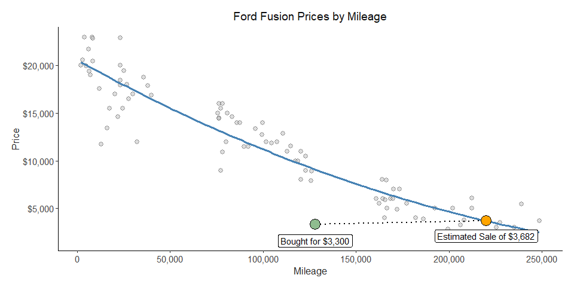
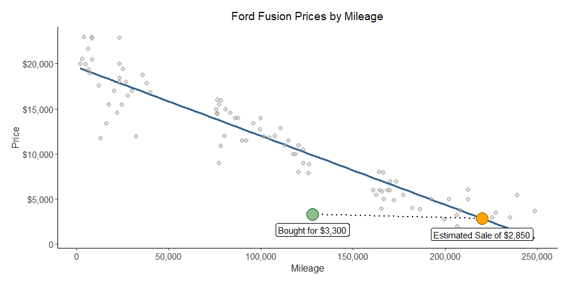
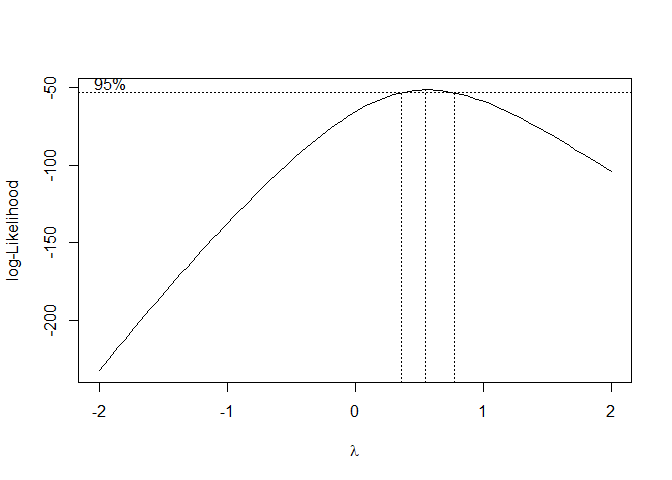
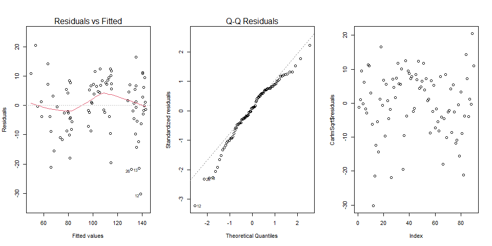
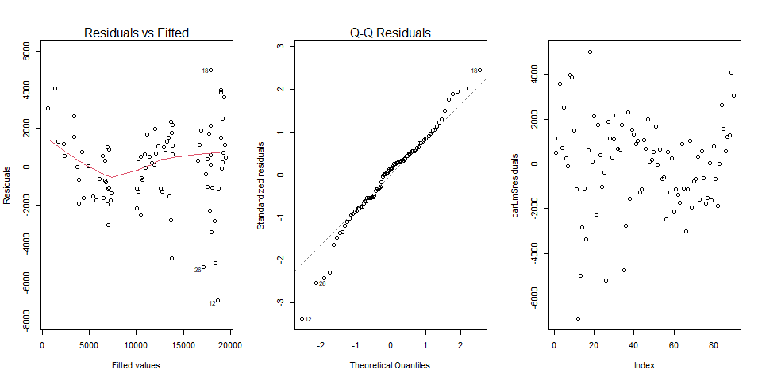

This analysis will use a linear model to predict the selling price of my vehicle when it reaches 220,000 miles, assuming an annual usage of 20,000 to 25,000 miles. To estimate the selling price, I will fit a simple regression model shown below, and then we will analyze its results to determine if it is reliable.
\[ \underbrace{{Y}_i}_\text{Predicted Price} = \overbrace{b_0}^\text{est. y-int} + \overbrace{b_1}^\text{est. slope} \underbrace{X_i}_\text{Mileage} \] \[ \text{.05 Alpha Level Considered for Slopes and Intercepts Statistical Significance} \]
When performing the regression analysis on this data, I noticed that a Box-Cox transformation was recommended. Therefore, I proceeded to model both a simple linear model and the transformed version. The transformed model, incidentally, turned out to be the better of the two. You can find the details for both models in the tabs below.

Here is the graph of my transformed linear model. I initially made this prediction using a simple linear model (you can view it in the next tab). After setting it up, I performed a Box-Cox test to identify any recommended transformations. As expected, the test suggested a square root transformation (with a lambda of 0.54), resulting in the graph above. You can still see the original linear model as a light grey line in the background.
I want to emphasize that the purpose of this model is to predict a realistic selling price for my car. A good measure for this is the slope between the buying and selling points. This slope represents an increase in value per mile driven of $0.0042. This calculation comes from taking the difference in price between the selling and buying points and dividing it by the mileage difference.
Based on this, my predicted selling price could be of $3,682! Not bad, right? This model suggests that even if I sell my car after driving it for another 100,000 miles, I could still get around 300 dollars in return.
This transformed model makes sense to me because used cars rarely depreciate to zero; even when considered junk, they can be sold for parts, allowing you to recover some money.
Now, let’s take a look at the statistical summary of the model.
| Estimate | Std. Error | t value | Pr(>|t|) | |
|---|---|---|---|---|
| (Intercept) | 143.4 | 1.744 | 82.24 | 5.171e-85 |
| mileage | -0.0003762 | 1.396e-05 | -26.95 | 2.737e-44 |
| Observations | Residual Std. Error | \(R^2\) | Adjusted \(R^2\) |
|---|---|---|---|
| 90 | 9.52 | 0.8919 | 0.8907 |
In my opinion, things look good in this model’s summary. With an R2 close to .90 and both p values being low enough, it would be safe to trust the model’s accuracy after checking if requirements are met in the diagnostics.

This is my original linear model. Notably, the slope of the line connecting my buying and selling points is negative, with a slope of $0.0048 dollars per mile.
Consequently, this model predicts a selling price of $2,849.73, which is almost $800 lower than the transformed model. While this amount is not insignificant, it’s important to consider factors that affect the data, such as the fact that cars don’t depreciate to zero and that the model may fit better for higher mileages.
I find it interesting that both predictions are close, yet there is a $800 difference between them, which could be quite significant.
Let’s now review the statistical summary of this model.
| Estimate | Std. Error | t value | Pr(>|t|) | |
|---|---|---|---|---|
| (Intercept) | 19646 | 380.3 | 51.66 | 1.305e-67 |
| mileage | -0.07635 | 0.003044 | -25.08 | 7.361e-42 |
| Observations | Residual Std. Error | \(R^2\) | Adjusted \(R^2\) |
|---|---|---|---|
| 90 | 2076 | 0.8773 | 0.8759 |
In my opinion this model isn’t bad as either, it has a nice R2 of .87. As well as significant P. values at the alpha level of .05.
I still prefer the transformed model because of how it fits the data in a better way.
To check for transformations possibilities I ran a Box Cox test on my linear model and got the next graph.

At simple view we can guess that there is a .5 (Square Root) transformation suggested. I went ahead and checked my Lambda value and got a 0.55. This confirmed a Square Root transformation would be appropriate.
To apply this transformation, you need to take the square root of your Y values in the linear model and then adjust your model using the transformed Y intercept and slope, as shown below.
\[ \sqrt{\hat{Y_i}} = 1.434 \times 10^2 - 3.762 \times 10^{-4}X_i \]
These results are used to plot the transformed line that fits your model. However, to convert your prediction results back to the original scale, you need to apply the inverse of the transformation used in your linear model, as shown below:
\[ \hat{Y_i} = (1.434 \times 10^2 - 3.762 \times 10^{-4}X_i)^2 \]
As you can see, to reverse the square root transformation we applied earlier, we now square the prediction results to return them to their original scale. This process aligns with the transformed model and helps achieve a better fit for your data and model.

The diagnostic plots for the transformed model look good to me. While there is a violation of normality, the plots for independence and variance appear satisfactory. This suggests that the transformed model can be trusted.

The diagnostic plots for the original model look decent, but they show more issues compared to the transformed model. Although the original model is not completely untrustworthy, it reinforces that the transformed model is more reliable. Nevertheless, the original model is still acceptable.
I originally bought this car for $3,300. When I purchased it in 2021, it had 128,000 miles. It’s currently at 195,000 miles after 3 years. I expect to continue using it, even if I leave Rexburg. I’ll probably take it with me after graduation and use it a while longer. However, if the opportunity arises to sell it, I would consider this study.
If I sell it after reaching 220,000 miles, the transformed linear model predicts that the car would still be worth $1,000, even at 300,000 miles. This means I could recover about one-third of what I originally paid for it after over 4 years of use.
Overall, there is sufficient evidence to conclude that the models, particularly the transformed one, can be trusted in their predictions, given the current data.